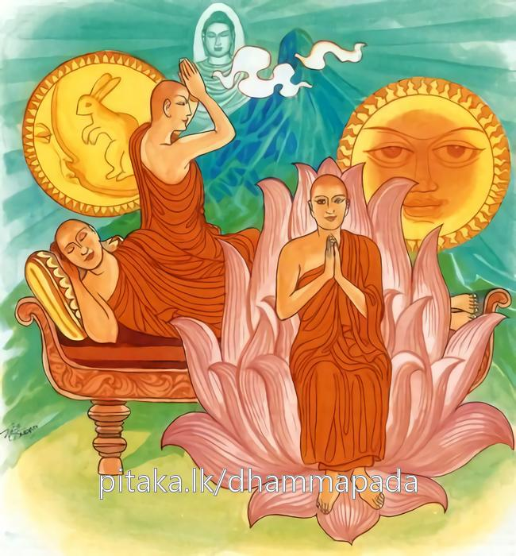
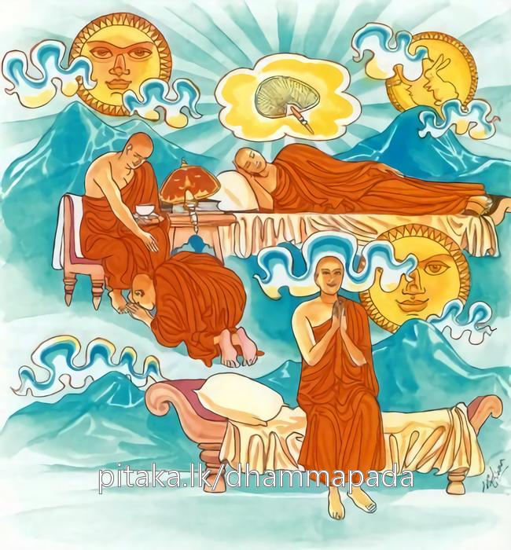
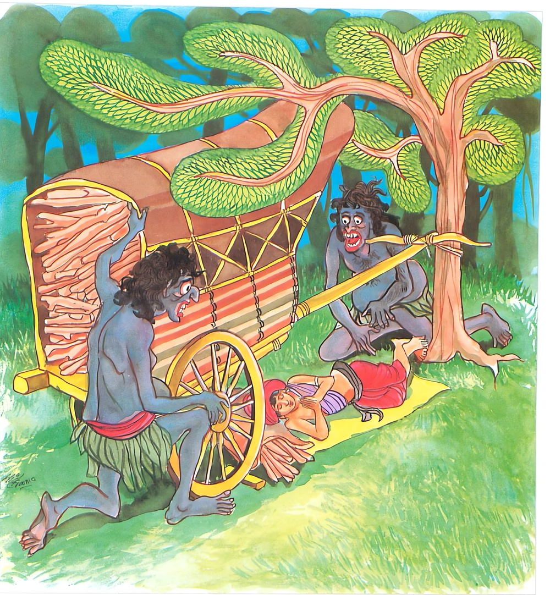

21-5 දාරුසාටික-දරකත්තකරුගේ පුතු පිළිබඳ කථා පුවත
මෙම කතාව සද්ධර්ම සාගරයෙන් ද කියවන්න.
සුප්පබුද්ධං පබුජ්ඣන්ති සදා ගොතමසාවකා
යෙසං දිවා ච රත්තො ච නිච්චං බුද්ධගතා සති.
යම් කෙනකුන්හට දහවලුත් රෑත් නිතර බුදුගුණ ඇරැබැ උපදනා සිහිය ඇත්තේ ද, ඒ ගෞතම ශ්රාවකයෝ හැම කල්හි සුප්රබුද්ධ ව පුබුදින්නාහ. (බුදුගුණ සලකා ගෙණ යෙහෙන් නිදා යෙහෙන් පුබුදින්නාහ).

සුප්පබුද්ධං පබුජ්ඣන්ති සදා ගොතමසාවකා
යෙසං දිවා ච රත්තො ච නිච්චං ධම්මගතා සති.
යම් කෙනකුන්හට දහවලුත් රෑත් නිතර (සපර්ය්යාප්තික නව ලෝකෝත්තර) ධර්මය අරබයා උපදනා සිහිය ඇද්ද, ඒ ගොයුම්සව්වෝ හැම කල්හි සුප්රබුද්ධ ව පුබුදින්නාහ.
සුප්පබුද්ධං පබුජ්ඣන්ති සදා ගොතමසාවකා
යෙසං දිවා ච රත්තො ච නිච්චං සඞ්ඝගතා සති.
යම් කෙනකුන්හට දහවලුත් රෑත් සඟගුණ ඇරබැ උපන් සිහිය ඇද්ද, ඒ ගොයුම්සව්වෝ හැම කල්හි සුප්රබුද්ධ ව පුබුදින්නාහ.

සුප්පබුද්ධං පබුජ්ඣන්ති සදා ගොතමසාවකා
යෙසං දිවා ච රත්තො ච නිච්චං කායගතා සති.
යම් කෙනකුන්හට දහවලුත් රෑත් නිතර (ද්වත්තිංසාකාර වශයෙන් හෝ නවසීවථිකා වශයෙන් හෝ චතුධාතුවවත්ථාන වශයෙන් හෝ අජ්ඣත්තික නීලකසිණාදී වශයෙන් හෝ) කය ඇරැබැ උපදනා සිහිය ඇද්ද, ඒ ගොයුම් සව්වෝ හැම කල්හි සුප්රබුද්ධ ව පුබුදින්නාහ.
සුප්පබුද්ධං පබුජ්ඣන්ති සදා ගොතමසාවකා.
යෙසං දිවා ච රත්තො ච අහිංසාය රතො මනො.
යම් කෙනකුන්ගේ සිත දහවලුත් රෑත් අහිංසාභාවනායෙහි (කරුණා භාවනායෙහි) ඇලුනේ ද ඒ ගොයුම්සව්වෝ හැම කල්හි මනා පිබිදීමෙන් පුබුදිත්.
සුප්පබුද්ධං පබුජ්ඣන්ති සදා ගොතමසාවකා
යෙසං දිවා ච රත්තො ච භාවනාය රතො මනො.
යම් කෙනකුන්ගේ සිත දහවලුත් රෑත් (මෙත්) බවුන්හි ඇලුනේ ද, ඒ ගොයුම්සව්වෝ හැම කල්හි මනා ව පුබුදිත්.

"සුප්පබුද්ධං" යන මේ ධර්ම දේශනය ශාස්තෲන් වහන්සේ වේළුවනාරාමයේ වැඩසිටියදී දාරු සාකටිකගේ පුතු නිමිති කරගෙන දේශනා කළහ.
රජගහනුවර සම්මාදිට්ඨික පුතාද මිථ්යා දෘෂ්ටික පුතා ද යනුවෙන් දරුවෝ දෙදෙනෙක් නිතර පන්දු ක්රීඩාවේ යෙදෙති. මොවුන් දෙදෙනා අතරින් සම්මා දෘෂ්ටික පුත්රයා බෝලය දැමීමේදී බුද්ධානුස්සතිය සිහි කොට "නමෝබුද්ධස්සාති” යනුවෙන් පවසා පන්දුව දමයි. අනෙකා තීර්ථකයන්ගේ ගුණය උදෙසා "නමො අරහන්තානං” රහතුන්ට නමස්කාර වේවායි කියා පන්දුව දමයි. ඔවුන් දෙදෙනා අතර සම්මා දිට්ඨිකගේ පුතා දිනයි - අනෙකා පැරදෙයි ඔහු ඔහුගේ ක්රියාව දැක මේ තැනැත්තා මෙය සිහිකොට මෙලෙස කියා පන්දු.... දමන්නේ මා පරදවයි. මම ද එසේ කරමියි බුද්ධා නුස්සතිය පුරුදු කළේය. ඉක්බිති එක් දිනක් ඔහුගේ පියා කරත්තය යොදා දර සඳහා යන්නේ මේ දරුවා ද කැඳවාගෙන ගොස් කැලයේ දර කරත්තය පුරවා ආපසු එන්නේ නගරයෙන් බැහැර සොහොනක් ළග. ජලය පහසුතැනක ගොනුන් මුදවා ආහාර ගැනීම කළේය. ඉක්බිති එම ගොනු සවස් කාලයේ පුරුදු පරිදි අනෙක් ගව සමුහයාද සමග නගරයට පිවිසියාහුය. රියකරුද ගොනුන් ලුහුබැඳ ගොස් නගරයට පිවිසියේ සවස ගොනුන් දැක, ඔවුන් ගෙන නික්මෙන්නේ වාසල දොර වැසීය. එකල්හි රියකරුට නගරයෙන් පිටත යා නොහැකි වුයෙන් ඔහුගේ පුතා තනිවම රාත්රිකාලයේ කරත්තය යටට වී නිදාගත්තේත්ය. රජගහ නුවර ප්රකෘතියෙන්ම අමනුෂ්යයන් බහුලය. මොහු සොහොන අසල නිදාගත්තේ අමනුෂ්යයෝ දෙදෙන්නෙක් ඔහු දුටුවෝය. එකෙක් මිථ්යා දෘෂ්ටික හෙයින් සසුනට විරුද්ධය. එකෙක් සම්යදිෂ්ටි නිසා සසුනට පක්ෂය ඔවුන්ගෙන් මිථ්යා, දෘෂ්ටිකයා මෙසේ කීවේය. අපි මොකුත් නොකෑවෙමු මොහු කමු යනුවෙනි. අනෙකා වැඩක් නැත මට රුචි නොවේ වැලැක්වීය. ඔහු අනෙකා විසින් වළක්වන ලද්දේද ඔහුගේ වචනය නොතකා දරුවා පයින් ගෙන ඇද්දේය. ඔහු බුද්ධානුස්සතිය පුහුණු හෙයින් එකෙනෙහි නමො බුද්ධස්සති - පැවසුවේ. අමනුෂ්යයා මහත් බියට පත්ව පසෙකටවී සිටියේය. අනතුරුව අනෙකා අප විසින් නොකට යුත්තක් කළෙමු. දඩුවමක් කරමුයි කියා ඔහු රකිමින් සිටියහ. මිථ්යා දෘෂ්ටිකයා නගරයට පිවිස රජුන්ගේ භෝජන භාජනයෙන් ආහාර භාජනය පුරවාගෙන ගෙන ආවේය. ඉක්බිති දෙදෙනාම ඔහුගේ දෙමාපියන් ලෙසට උවටැන් කර කෑම කවා මේ අක්ෂර රජු දකීවා, වෙන අයකු නොදකීවා. යි එම පුවත ප්රකාශ කරමින් යක්ෂයාගේ ආනුභාවයෙන් ආහාර බඳුන්නේ අකුරු කොටා පාත්රය දර කරත්තයේම තබා මුළු රාත්රිය ආරක්ෂා කොට ගියාහුය.
දෙවැනි දවසේ රාජ මන්දිරයෙන් භාණ්ඩ සොරා ගත්තේ යයි කෝලාහල කරමින් දොරටුවසා බලා එහි නොදැක නගරයෙන් නික්මී ඔබ මොබ බලවනේ දර කරත්තයේ රන් භාජනය දැක මේ සොරායයි එම දරුවා ගෙන රජු දැක්වීය. රජු අකුරු බලා මේ කුමක්ද දරුව යනුවෙන් විමසුවේය. දේවයනි මම නොදනිමි. මගේ දෙමාපියෝ රාත්රි අවුත් මට කෑම දී රකිමින් සිටියාහුය. මම ද දෙමාපියන්ගේ රැකවරණය මට බිය නැතිව මම නිදාගත්තෙමි. මම දන්නේ මෙපමනකි. මේ අවස්ථාවේදී ඔහුගේ දෙමාපියෝ ද එතැනට ආවාහුය. රජු ඒ පුවත දැන ඒ තිදෙනාම ගෙන බුදුන් වෙත ගොස් සියල්ල පවසා ස්වාමීනි "බුද්ධානුස්සතිය” කුමක්ද මෙසේ සිදු වේද නැතහොත් ධම්මානුස්සතියෙන් සිදු වේද? අනතුරුව බුදුහු මහරජ හුදු බුද්ධානුස්සතියෙන් පමණක් නොව, සහකාර වු සිත මනාසේ වඩන ලද්ද, ඔවුන් ආරක්ෂාවේ, අනුන්ගේ රැකවරණයකින් හෝ මන්ත්ර ඖෂධ ආදියෙන් හෝ කාර්යයන් නැතැයි පවසා ස්ථාන හය දක්වමින් මේ ගාථාව පැවසුහ.
දවල් රෑ හැම දින
සමරනෙ නම් බුදු ගුණ
බියෙන් තොර ගතියෙන
කෙනෙකි සුවසේ නිදා පිබිදෙන
යම් කෙනෙකුට රැ දාවල් දෙක්හි බුදුගුණ භාවනාව අරමුණු කොට උපන් සිහිය ඇත්තේ ද? ඒ ගෞතම ශ්රාවකයෝ හැම කල්හි සුවසේ නිදා පිබිදෙති. නිතර බුද්ධගතා සතිය ඇතිවීම, ධර්මගතා සතිය, ඇතිවීම සංඝගතා සතිය ඇතිවීම, කාය ගතා සතිය ඇතිවීම සතුන් මැරීමෙන් වෙන්වීම, කරුණ සිත ඇතිවීම යන මෛත්රිය වැඩීම යන කරුණු සයයි.
එහි සුප්පබුද්ධං පබුජ්ඣන්ති - යනු බුද්ධගතා සතිය ගෙන නිදාගන්නා අවදිවන විටද බුද්ධගතා සතිය ගෙන මනාසේ අවදි වෙති. සදාගොතම සාවකා - ගෞතම ගෝත්ර බුදුන්ගේ අනුශාසනයන් ශ්රවණය කරන්නා අදහන්නා හා එසේම අනුසාසනා කරන්නා ගොතම ශ්රාවක නම්, බුද්ධගතා සති - යනු ඉතිපි සෝ භගවා ආදි ප්රභේදයෙන් බුදුගුණ ඇරබ උපදින සිහියයි. එය නිත්ය කාලයේ ඇත. ඔවුන් හැමදා මැනවින් අවදිවේ යන අර්ථයි. එසේ නොහැකිවන්නෝ එක් දිනක් තුන්කල්හි දෙකල්හි එක් කාලයක බුද්ධානුස්සතිය සිහිකරන්නේ සුවසේ අවදිවෙති. ධම්මසති "ස්වාක්ඛාතෝ භගවතා ධම්මො” ආදී වශයෙන් ධර්මයේ ගුණ සිහි කරමින්, උපදින්නේ ධම්මානුස්සතියයි. ආදී ධර්මයේ ගුණ අරබයා සිහිය වඩන්නේ ධම්මානුස්සතියයි. සංඝගතා සති - සුපටිපන්නෝ භගවතො - මේ ආදී ප්රභේද සංඝ ගුණ නිමිති කරගෙන උපදවන සිහියයි. කායගතා සති නම් දොළොස් ආකාර වශයෙන් ද, නවසීවථික වශයෙන්ද නැත හොත් වතු ධාතු වවත්ථාන වශයෙන්ද, ආධ්යාත්මික නිලකසිණාදී රූපධ්යාන වශයෙන්ද උපදින සතියයි. අහිංසාය රතො - ඔහු කරුණා සහගත වේදනාවෙන් එක් දිසාවක් පතුරුවා වාසය කරයි. මෙලෙස කරුණා භාවනාවේ ඇලුනේ භාවනායාති - යනු චේතනා භාවනාව කිසියම් උපරිම තලයෙන් කරුණා භාවනාව කී හෙයින් මෙහි සියළු අවශේෂ භාවනා නම් මෙහිදී මෛත්රී භාවනාව අදහස් කරන ලදී. ඉතිරි කොටස් කියන ලද අයුරින් දතයුතුය.
දේශනාවසානයේ ඒ දරුවා සමග දෙමාපියෝ සෝවාන් ඵලයේ පිහිටි යාහුවෙති. පසුව පැවිදිවී සියල්ලෝ අරහත්වයට පැමිණියහ. පැමිණි අයටද දේශනය සාර්ථක විය.